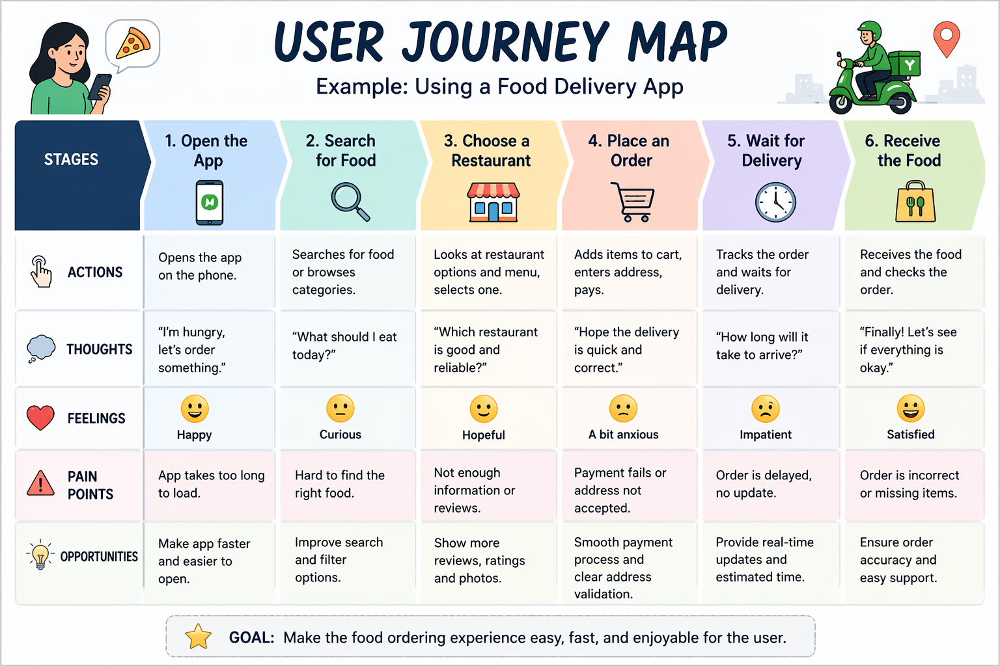

User Research
Qualitative research (Focus on WHY)
Qualitative research is a type of research that focuses on understanding people’s thoughts, feelings, and experiences. It answers questions like “why” users behave in a certain way. For example, talking to users in interviews or observing how they use an app are forms of qualitative research. This type of research uses words and opinions instead of numbers.
Quantitative research (Focus on How many)
Quantitative research is a type of research that focuses on numbers and data. It answers questions like “how many” or “how often.” For example, surveys with multiple-choice questions or data showing that 70% of users click a button are part of quantitative research. This type of research uses statistics and measurable data.
Journey Map
A journey map (or user journey map) is a simple way to show the step-by-step experience of a user when they use a product, app, or service. In very easy language, a journey map is like a story of what a user does, thinks, and feels from start to end.
A journey map shows:
- what the user does
- what the user thinks
- how the user feels
- what problems the user faces
What is Included in a Journey Map?
- Steps – the actions the user takes
- Actions – clicking, searching, buying
- Thoughts – what the user is thinking
- Feelings – happy, confused, frustrated
- Pain points – problems or difficulties
Why Journey Mapping is Important
- it helps us understand users better
- it shows where users face problems
- it helps improve the design
- it makes the user experience better
